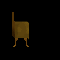
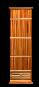

El oficio de la carpintería sirve para construir items a base de leños, una ves que tengas un SERRUCHO deberás equiparlo con la TECLA EQUIPAR (E), luego presionar TECLA USAR (U o DOBLE CLICK) y se abrirá una ventana que mostrará el listado de items que el personaje podrá construir según la clase y puntos de habilidad en carpintería.
Temas Relacionados: Sección: Macros y Centinela
El trabajador podrá construir de a UNO o MAS objetos dependiendo de su nivel, mientras que el resto de las clases sólo lo podrá hacer de a uno por vez.
MEJORA DE OBJETOS
Consiste en la mejora de Flechas/Arcos/Barcas que son correlativas entre sí.
Para mejorar un item, se debe tener una cierta cantidad de leños comunes, que complemente a la cantidad de leños necesarios para crear el item original.
Al ser items progresivos, la lista se reduce a solo unos pocos objetos.
A continuación una lista de los items que podes construir:
|
IMAGEN |
NOMBRE |
LEñOS REQUERIDOS
 / / |
PUNTOS DE HABILIDAD REQUERIDOS EN CARPINTERíA SEGúN LA CLASE |
LEñOS REQUERIDOS PARA MEJORAR
/ |
OBJETO MEJORADO |
PUNTOS DE HABILIDAD REQUERIDOS EN CARPINTERíA PARA MEJORAR |
|  | Flecha | 1 / 0 | 20 (Trabajador)
60 (Demás Clases) | 3 / 0 | Flecha +1 | 40 (Trabajador) | |  | Flecha +1 | 4 / 0 | 40 (Trabajador) | 3 / 0 | Flecha +2 | 65 (Trabajador) | |  | Flecha +2 | 6 / 0 | 65 (Trabajador) | | | | |  | Flecha +3 | 0 / 2 | 90 (Trabajador) | | | | |  | Laúd Mágico | 1500 / 0 | 100 (Trabajador) | | | | |  | Laúd Elfico | 0 / 1150 | 100 (Trabajador) | | | | |  | Flauta Mágica | 1500 / 0 | 100 (Trabajador) | | | | |  | Flauta Elifca | 0 / 1000 | 100 (Trabajador) | | | | |  | Báculo Engarzado | 0 / 2900 | 85 (Trabajador) | | | | |  | Arco de Cazador | 0 / 500 | 100 (Trabajador) | | | | |  | Arco Compuesto Reforzado | 650 / 0 | 75 (Trabajador) | | | | |  | Arco Compuesto | 450 / 0 | 40 (Trabajador) | 268 / 0 | Arco Compuesto Reforzado | 75 (Trabajador) | |  | Arco Simple Reforzado | 175 / 0 | 50 (Trabajador) | | | | |  | Arco Simple | 42 / 0 | 20 (Trabajador)
60 (Demás Clases) | 139 / 0 | Arco Simple Reforzado | 50 (Trabajador) | |  | Barca | 10000 / 0 | 40 (Trabajador) | | | | | | Galera | 0 / 10000 | 65 (Trabajador) | 0 / 6500 | Galeón | 90 (Trabajador) | | | Galeón | 0 / 15000 | 90 (Trabajador) | | | | |  | Tambor | 800 / 0 | 75 (Trabajador) | | | | | | Laúd | 800 / 0 | 75 (Trabajador) | | | | | | Flauta | 800 / 0 | 75 (Trabajador) | | | | |  | Cuchara | 3 / 0 | 5 (Trabajador)
15 (Demás Clases) | | | | |  | Silla | 25 / 0 | 9 (Trabajador)
27 (Demás Clases) | | | | |  | Silla | 25 / 0 | 9 (Trabajador)
27 (Demás Clases) | | | | |  | Butaca | 25 / 0 | 9 (Trabajador)
27 (Demás Clases) | | | | | | Banqueta | 50 / 0 | 9 (Trabajador)
27(Demás Clases) | | | | |  | Mueble Rústico | 400 / 0 | 56 (Trabajador) | | | | |  | Mueble Rústico | 400 / 0 | 56 (Trabajador) | | | | |  | Sillón | 400 / 0 | 56 (Trabajador) | | | | |  | Sillón | 50 / 0 | 9 (Trabajador)
27 (Demás Clases) | | | | |  | Sillón | 60 / 0 | 15 (Trabajador)
45 (Demás Clases) | | | | | | Sillón Azul | 60 / 0 | 15 (Trabajador)
45 (Demás Clases) | | | | | | Sillón Azul Doble | 120 / 0 | 25 (Trabajador)
75 (Demás Clases) | | | | |  | Armario | 200 / 0 | 30 (Trabajador)
90 (Demás Clases) | | | | |  | Caña de Pescar | 70 / 0 | 12 (Trabajador)
36 (Demás Clases) | | | |
|
|